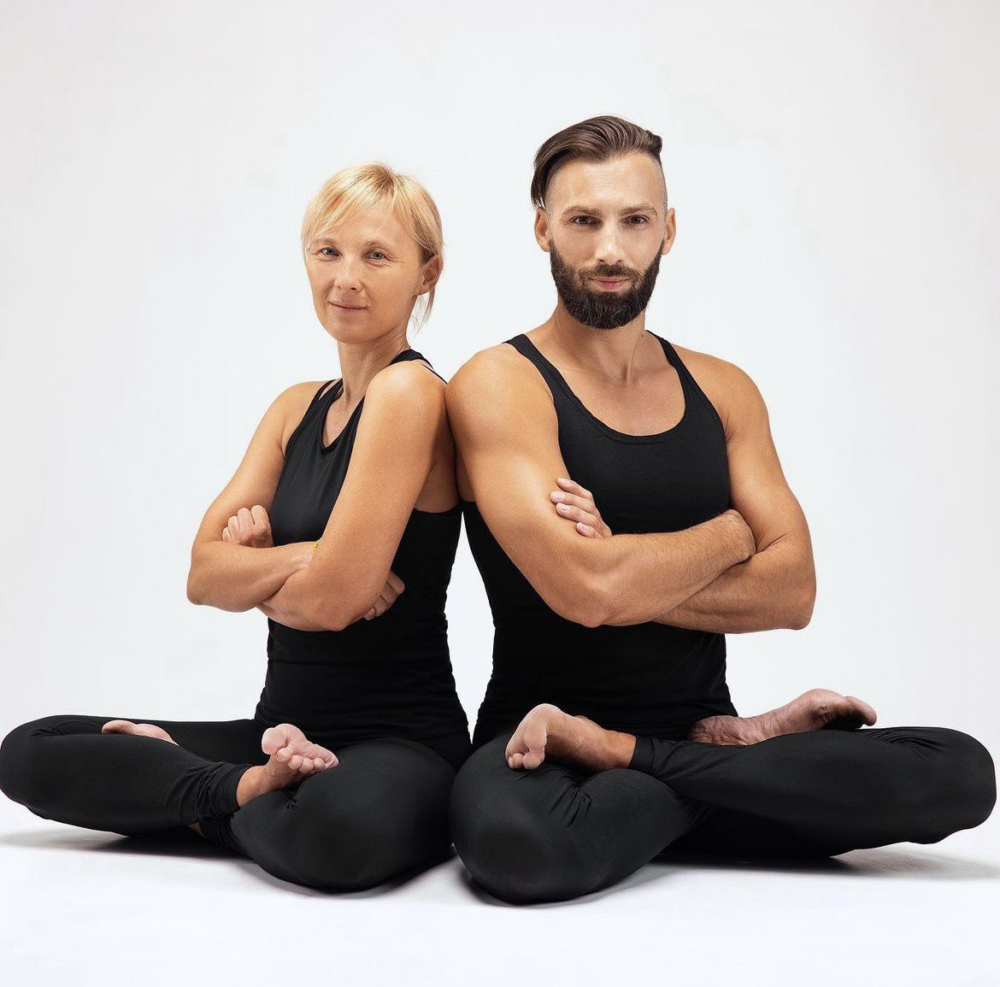

About Balance Yoga
Balance Yoga - сучасний стиль хатха йоги родом із Харкова, заснований на глибокому розумінні анатомії та біомеханіці людського тіла. Велика увага надається безпечному відновленню м'язового балансу за допомогою динамічних вправ на м'язи антагоністи, що дає можливість ефективніше працювати у статичних навантаженнях та швидше розвиватися у практиці. І це унікальна риса даного стилю.
Представники стилю Balance Yoga
Валентина Малиновська
Авторка та розробниця методу Balance yoga. Сертифікована інструкторка з хатха-йоги та йогатерапевтка з багаторічним досвідом викладання та науковим підхідом до йога-практики.
Брала участь у багатьох семінарах з Трай-йоги (Калі Рей), школі Д. Брахмачар’я (Рейнхарда Гаментхаллера), Свастха-йоги(Сергія Агапкіна), Аштанга-віньяса(Девіда Свенсона, Петри Райсянена, Шарата Р. Джойса, Маркa Дербі и Джоан Пелье). Має сертифікацію інструктора йоги за стандартами International Yoga Federation, диплом міжнародної Федерації Йоги та сертифікат викладача Аштанга-віньяса йоги (Девід Свенсон).
З 2011 року стала організаторкою й провідною викладачкою курсів підготовки тренерів хатха-йоги в Харкові і інших містах України.
Ігор Ткачов
Багаторазовий учасник та хедлайнер міжнародних фестивалів з йоги: Avatar, Gran Canaria Conference, Carpatian Yoga conference. Викладач йоги понад 13 років. Проходив навчання з йоги та йога терапії у таких майстрів як Сергій Агапкін та Валентина Малиновська. До цього кілька років присвятив заняттям бойовими мистецтвами та цигун.
Сертифікований фізіо та йога терапевт:сертифікати Mulligan, Mulligan Sport, PNF 2, йога терапія ОДА ІТСО, йогатерапія в неврології ІТСО, PNF у практиці йоги. У роботі використовує статико-динамічні послідовності у традиції Крішнамачар'ї.
Брав участь у розробці тренувальних послідовностей школи Balance Yoga.